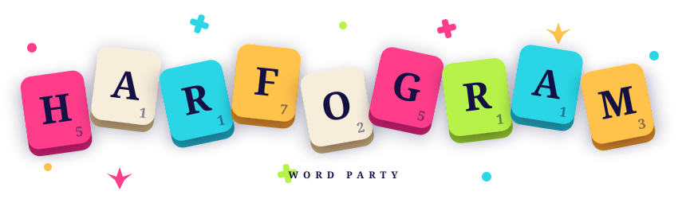

7 farklı harita, güçlü yetenekler, sezonluk Battle Pass. Arkadaşlarınla aynı cihazda, çevrimiçi ya da yapay zekaya karşı — harfleri birleştir, puanı kap, kazan.
Ücretsiz indir · iOS & Android · 16 Dilde
Hızlı maçla rastgele rakip bul, özel oda kurup arkadaşını davet et, aynı cihazda sırayla oyna ya da yapay zekaya meydan oku.
Klasik'ten Mayın Tarlası'na, her tahta kendi stratejisini dayatıyor. Hangisi favorin olacak?
Türkçe, İngilizce, Almanca, Fransızca, İspanyolca, Portekizce, Rusça, İtalyanca, Lehçe, Endonezce, Ukraynaca, Flemenkçe, İsveççe, Norveççe, Danca ve Rumence — tam sözlük desteğiyle.
Bomba, Hırsız, Premium Takas ve dahası. Doğru anda doğru yeteneği kullan, oyunu çevir.
Sezonluk ödüller, özel kozmetik unvanlar. Oynadıkça ilerle, sezonu tamamla.
50'den fazla başarım, global liderlik tablosu, oyuncu seviyesi. Her maç seni bir adım öteye taşır.
Her gün yeni bir tahta. En yüksek puanı yap, skor tablosunda yerini al.
Yalnızca gerçek kelimeler kabul edilir — özel isim yok, uydurma yok. Kazanırsan gerçekten kazanmış olursun.
Temalar, özel tahta görünüşleri, taş kaplamaları. Battle Pass'e özel kozmetikler de cabası.
Elindeki harflerle tahtada geçerli kelimeler oluştur. Hangi dilde oynayacağın sana kalmış.
Harf değerleri ve bonus kareler ile puanını katla. Doğru kareyi yakala, puanı uçur.
Sıra sırayla döner. Harfler bitince en yüksek toplam puanın sahibi kazanır.
Harita çeşitliliği Harfogram'ın DNA'sında. Her tahta farklı bonus düzeni, farklı strateji demek. Bir favorin olacak — sonra hepsini denemek isteyeceksin.
Aynı harf setiyle herkes yarışır — fark senin bulduğun kelimelerde. Her dilin kendi skor tablosu var, her gün sıfırlanır. Serini koru, zirveye tırman.
Bugünün tahtasıHemen OynaEvet. Harfogram'ı ücretsiz indirip oynayabilirsin. İsteğe bağlı reklamlar ve bonus içerikler bulunur.
Evet. Aynı cihazda sırayla oynama ve yapay zekaya karşı maçlar internet olmadan da çalışır. Çevrimiçi rakipler için bağlantı gerekir.
Türkçe, İngilizce, Almanca, Fransızca, İspanyolca, Portekizce, Rusça, İtalyanca, Lehçe, Endonezce, Ukraynaca, Flemenkçe, İsveççe, Norveççe, Danca ve Rumence — tam sözlük desteğiyle. Bazı dillerin sözlüğü ilk kullanımda bir kez indirilir (birkaç MB).
Özel oda kurup davet linkini paylaşabilir ya da menüdeki 'Arkadaşını Davet Et' ile davet koduna sahip olabilirsin. Arkadaşın ilk maçını bitirdiğinde ikiniz de altın kazanırsınız.
Oyun içi altınla satın alabilir ya da Battle Pass ödülü olarak ücretsiz kazanabilirsin. Bomba, Hırsız, Premium Takas ve dahası seni bekliyor.
iOS ve Android. App Store ve Google Play üzerinden indirebilirsin.